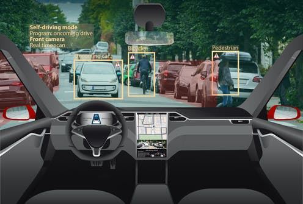
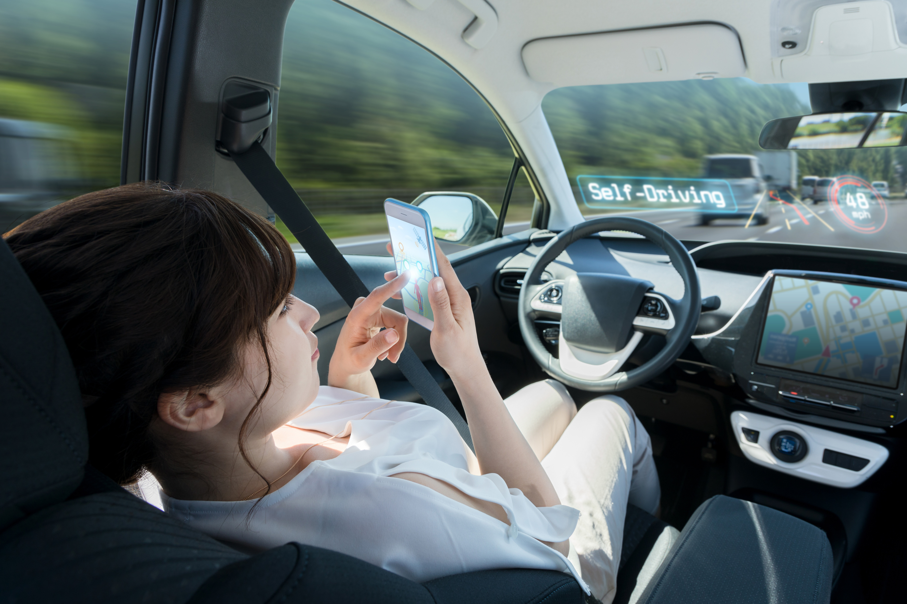

Mistakes are part of human nature; it is something that one cannot escape because we all do mistakes at some point in our life.
For example, when one is driving a car, one can do mistake and it results in traffic congestion and one can miss an important appointment
and it may also sometimes lead to something even worse, car crash or even death.
In 2019, Cape Town was named among 30 of the world’s most congested cities with the drivers spending an average of 124 hours a year in traffic.
More the city is crowded, more they are many cars, and more are the chances on getting in a car accident because the chance of people doing mistakes is higher.
Let’s also look this way, when someone want to go on a road trip, the person can get tired while driving which may also lead to a car accident.
In South Africa, 26 out of every 100 000 people die on the roads which is far higher than the global average (18 per 100 000) and
the leading causes of road accidents are distraction, speeding, reckless driving, drunk driving.
Therefore, many things can happen while driving a car because people always make mistakes, it is in our nature.
Solution
We could reduce the chances of getting in a car crash or stuck in a traffic jam and miss an important appointment at work, or at the hospital because
machines cannot make mistakes. We could implement a robot in each car, a robot who can drive a car by himself without any help coming from the outside.

When it comes for public transport such as buses, taxis, or Uber, we could use a person who will assist the robot in case there is some sort of error,
and the robot does not respond well. Therefore, the person could take over the car or try to fix the robot.
Also, for the road trip, we know that robots cannot get tired and are able to drive as long as there is nothing wrong with the car and people could fully enjoy their trip.
There are many advantages with the self-driving car, the risk in getting stuck in traffic will be low because robots cannot do reckless things while driving
and people can travel safely even if they are distracted or drunk.

However, the bad side that people may encounter is the possibility of getting a malfunction in the robot system while driving which may lead to an accident
unless the person was focus and may take the control of the car.
The consequences of getting self-driving car are more related to public transport because many people would end up losing their job as taxi or bus driver.